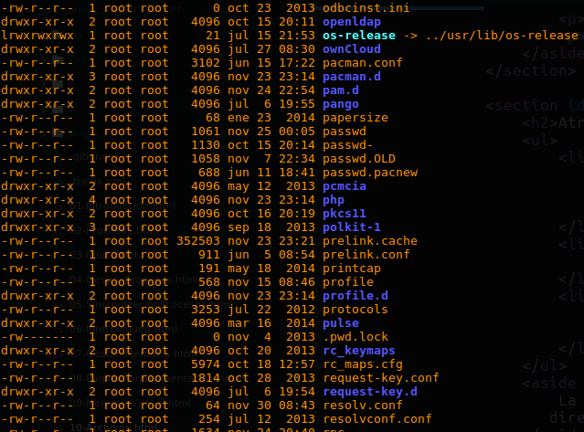
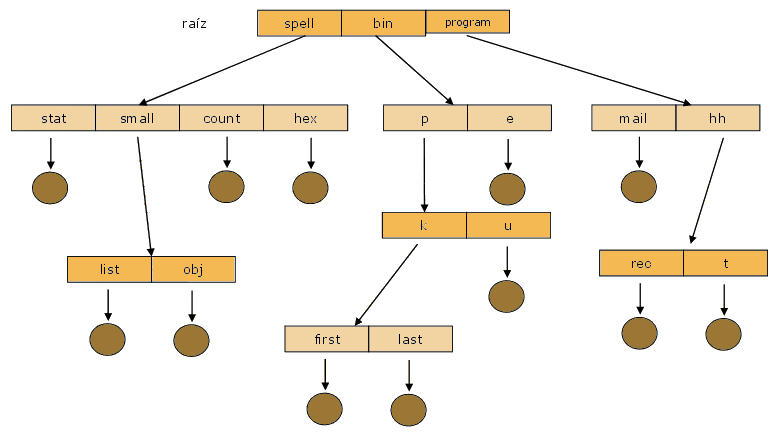

Universidad Nacional Experimental Del Táchira
Decanato De Docencia
Dpto. Ingeniería en Informática
Sistemas Operativos
Código 0435607T
Introducción
Hay tres requerimientos básicos de un sistema informático:
- Debe ser posible almacenar una gran cantidad de información.
- La información debe sobrevivir a la terminación del proceso que la utilice.
- Múltiples procesos deben ser capaz de acceder a la información concurrentemente.
Introducción
Surgen las preguntas:
- ¿Cómo se encuentra la información?
- ¿Cómo evitamos que un usuario lea la información de otro usuario?
- ¿Cómo se sabe cuales bloques están libres?
¿Qué es un archivo?
"Un archivo o fichero informático es un conjunto de bits almacenado en un dispositivo" Wikipedia, 2012
- Una colección de información relacionada con nombre que se guarda en un medio secundario.
- Es una secuencia de bits, bytes, líneas o registros cuyo significado es definido por su creador y usuario del mismo.
Archivos
- Es una colección de información relacionada, grabada en un almacenamiento secundario.
- Son unidades lógicas de información creadas por los procesos.
- Desde el punto de vista del usuario, es la unidad de almacenamiento secundario lógico.
- No es posible escribir datos en un almacenamiento secundario si no esta dentro de un archivo.
Atributos de archivo (1/2)
- Nombre: identifica al archivo de forma legible para el usuario.
- Identificador (i_nodo): es un código para identificar al archivo dentro del sistema de archivos.
- Tipo: indica el formato del contenido del archivo.
- Ubicación: es un puntero al dispositivo donde se almacena el archivo y al lugar donde se encuentra el archivo dentro del dispositivo.
Atributos de archivo (2/2)
- Tamaño Indica el tamaño del archivo (en bytes, palabras o bloques).
- Protección información del control de acceso.
- Fecha, hora y dueño información adicional para conocer cuando y quien hizo los últimos cambios.
Archivos
Ejemplo de archivos en la carpeta /etc
Estructura de archivo
- Ninguna: secuencia de palabras o bytes.
-
Estructura de registro sencilla:
- Líneas.
- Longitud fija.
- Longitud variable.
- Estructuras complejas:
- Documento con formato
- Archivo para cargar relocalizable
Operaciones con archivos (1/3)
-
Creación
Cuando se crea un archivo, se busca un espacio libre lo suficientemente grande para almacenarlo y luego se agrega en el directorio de entradas de archivo. -
Escritura
Al escribir, se accede al archivo con una llamada al sistema especificando su nombre y ubicación, el sistema explora la ubicación y devuelve un puntero de escritura.
Operaciones con archivos (2/3)
-
Lectura
Se accede al archivo con una llamada al sistema especificando su nombre y donde debe colocarse el siguiente bloque del archivo. De esta manera se obtiene un puntero de lectura para recorrer su contenido. -
Reposicionamiento
Se explora el directorio hasta encontrar el archivo indicado, se actualiza la entrada del puntero de posición con la nueva ubicación (sin realizar operaciones E/S).
Nota: Los puntero de lectura y escritura son únicos para cada proceso.
Operaciones con archivos (3/3)
-
Borrado
Para eliminar el archivo, se explora el directorio hasta encontrarlo, luego se libera su espacio en el dissco y se procede a eliminar la entrada del disco. -
Truncado
Esta operación consiste en borrar todo el contenido de un archivo pero manteniendo sus atributos. En vez de borrar y volver a crear el archivo, se reinicia el archivo con una longitud igual a 0 y se libera el espació asignado previamente.
Tipos de archivo
- Usualmente conocemos dos tipos de archivos: binarios y de texto. Sin embargo, a bajo nivel ambos son binarios, la única diferencia se interpreta: los archivos de texto son codificados en ASCII, cada byte representa un caracter o un valor como: salto de línea, retorno del carro, entre otros.
- Una técnica común para implementar los tipos de archivos, es dividir el nombre del archivo en 2 partes: una para el nombre y otra para la extensión.
- La extensión simplemente indica el formato del contenido, sin embargo, puede ser creado/editado por el usuario por lo que no es confiable interpretar el archivo solo por la extensión.
Tipos comunes de archivo
| Tipo | Extensión usual | Función |
|---|---|---|
| Ejecutable | exe, com, bin o niguna. | Programas en lenguaje de máquina listos para ser ejecutados |
| Objeto | obj, o | Lenguaje de máquina compilado pero no montado. |
| Código fuente | c, cc, cpp, java, py, asm, asp, php, js | Código fuente en diversos lenguajes. |
| Bibliotecas | so, dll, a, lib | Bibliotecas de rutina para programadores. |
| Impresión o visualización | ps, pdf, jpg, bmp, png | Archivos para visualizar imágenes o documentos |
| Archivado | zip, rar, tar, gz, bz2 | Archivos comprimidos para ahorrar espacio. |
Métodos de acceso
-
Acceso secuencial.
-
Acceso directo.
Métodos de acceso
Acceso secuencial.
- La información es procesada en orden.
- Es el método mas común, usado por los archivos de texto.
- Dependiendo de la operación realizada, el puntero del archivo se incrementa o disminuye, además es posible ubicarlo a cualquier parte moviéndose N cantidad de registros.
Métodos de acceso
Acceso directo.
- El archivo esta compuesto por registros de longitud fija.
- No existe restricciones en cuanto al orden de lectura o escritura.
Métodos de acceso
{kind=link}
Acceso directo.
read n
write n
position to n
read next
write nex
rewrite n
n = relative block number
Estructura de directorios
- Una colección de nodos con información acerca de archivos
- Los directorios sirven para organizar y proporcionar información acerca de la estructura de los archivos en el sistema de archivos.

Operaciones de directorios
- Búsqueda de archivos.
- Crear archivos.
- Borrar archivos.
- Listar.
- Renombrar archivos.
- Recorrer el sistema de ficheros.
Directorios de un nivel

Directorios de dos niveles

Directorios en forma de arbol

Directorios en forma de grafo acíclico

Directorios en forma de grafo general

- Aparecen las rutas relativas, absolutas y los enlaces:
- ( . ) Directorio actual
- ( .. ) Directorio superior
Montaje de sistema de archivos
- Antes de utilizar un sistema de archivos se debe montar.
- Al sistema operativo se le proporciona el nombre del dispositivo y el punto de montaje.

El S.O. chequea que el dispositivo contiene un sistema de archivos válido, llama al controlador del dispositivo y lo coloca en el punto de montaje.